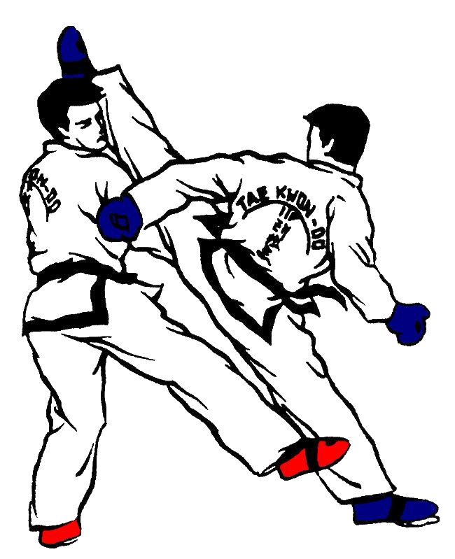

Escuela " aca va nombre de la escuela" de Taekwondo
Un poco de historia del Taekwondo

El taekwondo es un arte marcial de origen coreano que se enfoca en la defensa personal y el desarrollo personal. Su nombre se deriva de tres palabras en coreano: "Tae" que significa "pie", "Kwon" que significa "puño", y "Do" que significa "camino" o "disciplina".
La historia del taekwondo se remonta a hace más de 2.000 años, cuando se practicaban artes marciales en la península de Corea. En ese entonces, el taekwondo se conocía como "Subak", y se enfocaba en las técnicas de mano y pie para la defensa personal.
Con la llegada de la ocupación japonesa de Corea (1910-1945), las artes marciales tradicionales coreanas sufrieron una fuerte represión por parte de las autoridades coloniales. Después de la liberación del país, se inició un renacimiento y una reestructuración de estas formas de combate.
El taekwondo moderno tal como lo conocemos hoy fue desarrollado en la década de 1950 y 1960 por el General Choi Hong Hi, quien es considerado el fundador del taekwondo ITF (Federación Internacional de Taekwondo).
En 1955, se estableció la Asociación Coreana de Taekwondo, y en 1966 se formó la Federación Coreana de Taekwondo. Estas organizaciones contribuyeron al desarrollo y la difusión del taekwondo como un deporte nacional e internacional.
El taekwondo debutó como deporte olímpico de demostración en los Juegos de Seúl 1988, y se convirtió en deporte de medalla oficial en los Juegos de Sídney 2000.
En 1973, la Federación Mundial de Taekwondo (WTF) fue fundada para supervisar y regular el taekwondo a nivel mundial, estableciendo estándares de entrenamiento, competición y arbitraje.
El desarrollo del taekwondo desde 1955 ha sido inmenso y ha alcanzado popularidad universal. En un periodo corto, el taekwondo ha visto los siguientes cambios: en 1975, la Asociación General de Deportes Internacionales (General Association of International Sports) reconoció a la Federación Mundial (WTF); en 1976 se le aceptó como "a Conseil International du Sport Militaire sport" (deporte militar a nivel mundial); en 1980, el Comité Olímpico Internacional reconoció a la WTF; en 1981, el taekwondo fue aceptado como "World Games sport"; en 1983, se le aceptó en los Juegos Panamericanos y en los Juegos Africanos; en 1985, se adoptó como deporte de demostración en los Juegos Olímpicos; en 1986, el taekwondo fue aceptado en la Federación Internacional de Deportes Universitarios; en 1988, tomó parte en los Juegos Olímpicos de Seúl como deporte de demostración; en 1992, fue deporte de demostración en los Juegos Olímpicos de Barcelona; en 1994, el taekwondo adquirió "full olympic status" y fue aceptado como deporte olímpico para los Juegos Olímpicos de Sydney - Australia.
El taekwondo ha dejado una huella indeleble en la cultura y la historia de Corea, sirviendo como un símbolo de identidad nacional y un vehículo para la promoción de la paz y el entendimiento global a través del deporte.